A dealership website, lead desk and admin CMS for Company A, Lucknow (authorised dealer of "Brand X")
Author: Ashpreet Singh Saini · Version 1.0 · 9 November 2026
deployment.md. A1run.bat (Windows) or npm start → http://localhost:3000. Demo logins are in deployment.md.How to read this document. The problem statement is the only source of requirements. Any decision the statement does not cover is tagged A# and listed in the assumptions register (section 11). "Brief" means the problem statement. Sections 9 and 10 state plainly what is working, what is simulated and what is planned next.
The client's website "looks like every other dealer's and does nothing", and leads, test drives and service bookings live in Excel and phone calls. The brief estimates the leak at ₹2.11 crore a year: 1,350 of 4,500 monthly online leads are not called within 24 hours (₹1.62 crore) and 600 of 3,000 monthly service calls go unanswered (₹48.6 lakh).
I built a working product, not a mock-up: a server-rendered public site (new cars with a city-wise on-road price breakup, certified used cars, EMI, test-drive and service booking with real slot capacity, trade-in), a lead inbox that auto-assigns every enquiry to a named consultant and runs a five-minute response timer, an admin CMS driven by editable price tables, role-based access for ten roles, and an AI assistant that summarises each buyer and drafts a first reply. Everything runs from seeded data (including the three sample rows in the brief), has 67 automated API tests plus end-to-end suites, and is documented for deployment.
| Success measure in the brief | What the product does about it | How it is measured in the product |
|---|---|---|
| 90% of web leads called within 5 minutes | Instant auto-assignment to a named consultant, SLA timer (due_at = created + 5 min), acknowledgement message, lead-desk monitor for unassigned / breaching leads | Lead desk SLA board; exec dashboard "first response ≤ 5 min %" |
| 400 online test-drive bookings a month within 6 months | Booking in a real slot without calling (calendar-style date rail, live availability, confirmation ticket with calendar file and WhatsApp share), prefilled for signed-in customers | Exec dashboard: test drives booked / completed |
| Unanswered service calls from 20% to under 5% | Book a service online in about a minute against bay capacity; "request a call back" queue with a 15-minute SLA A6 | Call-back queue SLA; exec dashboard unanswered call-backs |
| Brief requirement | Status | Notes |
|---|---|---|
| Model and variant pages: photos, specs, colours, ex-showroom and on-road price by city from an admin price table | Built | Breakup, validity date, "may change" note; 6 cities A2 |
| Certified used-car listings: filters, photos, inspection report, price; masked registration | Built | 21 cars; 100-point inspection report; registration masked everywhere |
| Test-drive booking by showroom and demo car; service booking by workshop bay capacity | Built | Transactional, double-booking impossible (tested incl. concurrency) |
| EMI calculator and trade-in request form | Built | EMI on its own page, on model pages and as a "monthly budget" filter on the home page |
| Lead inbox for web enquiries and portal CSV imports, auto-assigned by showroom and model, response timer and status | Built | CSV import with header mapping, dry-run, per-row errors, de-duplication |
| Admin CMS: models, prices, offers, used stock, banners, user roles | Built | Some JSON-shaped fields (colours, specs, inspection) are edited as JSON text, not form widgets |
| AI: buyer summary, first-reply draft, used-car price band | Built | Rule-based by default; optional Claude integration with automatic fallback (section 7) |
| Roles: buyer and sales consultant (core slice) | Built and extended | Ten roles A7 |
| Hindi and English; DPDP consent and opt-out; indexable page per model and used car; load under 2.5 s on 4G | Built | Speed target met on a 4G profile; not under 4× CPU slowdown (section 9) |
| Mock payments, messages and outside systems; seed from the sample data | As asked | Messaging is a mock adapter; DMS is a daily CSV export; no payments |
| Out of scope: online payment, DMS integration, spare-parts e-commerce | Not built | The "Ai or automation" item in the brief's out-of-scope list sits above the detailed AI rules, so I read it as a heading, not an exclusion A9 |
Figure 1. One deployable unit. Dashed boxes are external systems that are optional, simulated or out of scope.
| Decision | Why | Cost / what I gave up |
|---|---|---|
| Server-rendered HTML with a little vanilla JS (no React or other framework) | The brief demands pages under 2.5 s on 4G and an indexable page per car. SSR gives crawlable HTML and a fast first paint with no client bundle; each page ships roughly 15 KB of JS. | No client-side routing; richer interactions are hand-written. Templates are plain strings (every interpolated value goes through an esc() helper). |
Zero runtime npm dependencies (node:http, node:sqlite, node:crypto) | Nothing to install, nothing to audit or patch, a 4-line Dockerfile, and a reviewer can run it immediately. | I wrote a router, a CSV parser, session handling and a rate limiter myself. Requires Node ≥ 22.13. |
| SQLite | The load is small: 4,500 leads and 3,000 service calls a month is a few per hour. A single file with WAL, foreign keys and transactions gives correctness (e.g. unique slot constraints) with no database server to run. | One writer, one process. Scaling out would mean moving to PostgreSQL (the SQL is plain, and access is in one db.js module). |
| Business rules in services, thin pages and API | Pages (SSR) and JSON API call the same service functions, so price, slot and assignment rules exist once and are unit-testable. | A little indirection. |
| Permission-based RBAC with server-side sessions | Roles map to permission strings editable by the admin; every API route declares its permission and a test fails if one does not. Sessions can be revoked (logout, password change, deactivation). | More moving parts than hard-coded role checks. |
| Prices only from admin tables | Brief: "on-road prices always come from the admin table". No price is hard-coded in code or templates. | Admin must keep tables current; stale rules show "price being updated" rather than a wrong number. |
| Adapters for messaging and AI | Brief says to mock messages and outside systems. A single messaging.js interface and an optional Claude call mean real providers plug in by environment variables. | Real providers were not exercised (section 9). |
Code layout. server/lib (router, db, auth, perms, csv) · server/services (business rules) · server/api (JSON routes) · server/pages + server/views (SSR templates, i18n, image helpers) · public (CSS, small JS, fonts, optimised images) · tests/api (node:test) · tests/e2e (HTTP and browser suites) · docs. About 7,300 lines in total.
Figure 2. Main tables (about 30 in total, created by versioned migrations in server/lib/db.js). Not every column is shown.
valid_until date. This is the table the "hard part" of the brief depends on.server/seed.js): the three rows from the brief (NEW-H-02, UC-1182, UC-1190, with Booked status) plus 4 models / 13 variants, 6 cities with price rules, 21 used cars with inspections, 32 past sales, 3 showrooms, 2 workshops, ~60 historical leads and the demo users. Everything beyond the three rows is invented A1A4.The engine in catalog.getOnRoadPrice reads only admin tables. It looks for a price_rules row for (city, model), else the city-wide row, then:
ex_showroom = variant.ex_showroom road_tax = ex × (ex > threshold ? pct_high : pct) / 100 registration = rule.registration_fee insurance = ex × insurance_pct / 100 handling, fastag = rule values tcs = ex > tcs_threshold ? ex × tcs_pct / 100 : 0 accessories = optional, from the model (toggle on the page) less = active cash offers flagged "show in on-road" and not expired on_road = ex + road_tax + registration + insurance + handling + fastag + tcs + accessories − less expired = rule.valid_until is in the past → UI shows "price being updated – request a quote"
Worked example from the seed (the brief's NEW-H-02, Model H ZX automatic, ₹12,45,000 ex-showroom), values from the running app:
| Line | Lucknow (₹) | Delhi NCR (₹) |
|---|---|---|
| Ex-showroom | 12,45,000 | 12,45,000 |
| Road tax (10%: seeded as 8% up to ₹10 lakh, 10% above) | 1,24,500 | 1,24,500 |
| Registration and smart card | 1,500 | 1,800 |
| Insurance | 38,595 | 37,350 |
| Handling and logistics | 4,500 | 5,500 |
| FASTag | 600 | 500 |
| TCS (1%, above ₹10 lakh) | 12,450 | 12,450 |
| Less: loyalty bonus offer (admin-defined) | − 15,000 | − 15,000 |
| On-road price | 14,12,145 | 14,12,100 |
The rates are illustrative seed values A3. Every page shows the breakup, the validity date and the note "Prices are indicative and may change without notice. Final on-road price is confirmed in the quotation." (English and Hindi). Demo-data note: the sample loyalty bonus appears in every visitor's breakup. For a live launch the dealer would switch it off with the admin flag "show in on-road" or limit it to eligible owners.
leads.pickAssignee): eligible consultants at the chosen showroom, preferring the model specialty, fewest open leads, then least recently assigned. A specialist is passed over only if a non-specialist has more than five fewer open leads. Without a showroom the city default is used. Nobody can be assigned who lacks the lead-work permission.listTestDriveSlots); submitting runs in one transaction and a unique index makes a double booking impossible (HTTP 409; tested with six concurrent requests). The booking creates a lead and assigns a consultant, and the confirmation shows a "ticket" with a downloadable calendar (.ics) file and a WhatsApp share link.capacity − booked); booking is refused when full. Job cards move through booked → checked in → in progress → ready → delivered.The lead desk or admin pastes or uploads a CSV from a car portal. A proper quoted-field parser reads it; headers are mapped flexibly (name/phone/mobile/email/model/city/message …); phones are normalised to ten digits; duplicates (same phone and model within seven days) are skipped; each bad row is reported with its row number; a dry-run previews the result before anything is saved. Imported leads are auto-assigned like web leads. Consent is recorded as "captured by the portal" A10.
Staff sign in with email and password (scrypt, throttled, 30-minute idle timeout); buyers and owners are optional and sign in with a phone number and a one-time code (hashed, 5-minute expiry, five attempts). Sessions are stored server-side as hashes of an opaque cookie id and are revoked on logout, password change, role change or deactivation. Each API route is wrapped in guard(permission, handler): unauthenticated → 401, missing permission → 403, state-changing request without JSON content type or X-Requested-With → 403 (CSRF). Data is scoped as well as gated: a consultant sees their own and their showroom's leads, a service advisor only their workshop, and the Dealer Principal is read-only (every one of 51 write calls tried with that role returned 403). Price-bearing fields (price rules, variants, cash offers, accessory price) need a separate price permission that only the admin has, so a content editor can change copy but never a price.
| Role | Can do | Cannot |
|---|---|---|
| customer | own bookings, vehicles, saved cars, export/delete own data | any staff API |
| consultant | work own/showroom leads, reply, reassign | import CSV, prices, users |
| lead_desk | all leads, assign, CSV import, SLA monitor | prices, users |
| showroom_manager | team inbox and stats, reassign within showroom | other showrooms |
| service_advisor / workshop_manager | job cards, call-backs / plus bays and all advisors | sales leads |
| used_manager | used stock, final prices, sees the AI price band | new-car prices |
| content_editor | banners, offers copy, model copy | any price |
| dealer_principal | read-only executive dashboard and audit log | every write |
| admin | everything, including roles and users | nothing |
Every form that collects personal data has an unticked consent checkbox linked to the privacy notice; the consent text, time, language and a hashed IP are stored. /opt-out (and withdrawal in the account page) marks all leads of that phone number as opted out and the messaging adapter refuses to send to them. Signed-in customers can download their data and request deletion, which the admin completes (anonymising their records). The notice and consent wording are my drafts, not legal advice A10.
Listings show year, owners, kilometres, fuel, transmission, a 100-point inspection report (sections of passed / needs-attention items with an overall score) and the price. The full registration number is stored but only a masked form (for example UP32 •• ••34) leaves the server – in HTML, JSON, JSON-LD and the sitemap (checked by automated tests). Photos were also masked: where a stock photo showed a number plate, the plate region is pixelated and the unmasked originals are kept out of the repository (earlier commits still contain some pre-masking versions; see section 10). Sold cars are hidden from anonymous visitors; the brief's UC-1190 shows as Booked.
The brief asks for three AI outputs and four safeguards. This is what each one does and where its limits are.
| Output | How it is produced | Who sees it |
|---|---|---|
| Buyer summary | Extracts needs, budget, timeline, model/used-car interest and a next-best action from the enquiry text, trade-in and form fields (rules and regular expressions, e.g. "under 12 lakh", "this week"). If ANTHROPIC_API_KEY is set, the same lead is sent to Claude (claude-sonnet-5-5, 8-second timeout) with an instruction not to invent facts; any error or timeout falls back to the rule-based summary. | The assigned consultant, desk and managers, labelled "AI-generated – review before use" |
| First-reply draft | Template-driven draft in English or Hindi that refers to the buyer's model and next step. With a key, Claude writes it; the output is then post-filtered. | Consultant only, as editable text |
| Used-car price band | Not an LLM: a statistical estimate from the 32 seeded past sales of the same model, year ±1 and similar kilometres (±15,000 km, widening to ±30,000 km if fewer than three comparables), returning the 25th / 50th / 75th percentile rounded to ₹5,000, the number of comparables and the basis. With no comparables it says so instead of guessing. | Only the used-car manager and admin |
confirmed_edit: true.Brief: a premium showroom feel – large car photography, generous spacing, one accent colour, a price and a clear next step on every car page, and "nothing on screen that lacks a purpose". The design starts from the reference mock-up supplied with the request (white and black, one red accent, diagonal slashes, black pill buttons, "Handpicked For You" cards), then refined through seven QA rounds against real screenshots.
docs/FONT_LICENSES.md), with metric-matched fallbacks so text does not jump.prefers-reduced-motion. Framer Motion's browser build is bundled locally (no CDN); only its 5 KB light build is used, for the matcher results, because the 61 KB full build would exceed the JavaScript budget.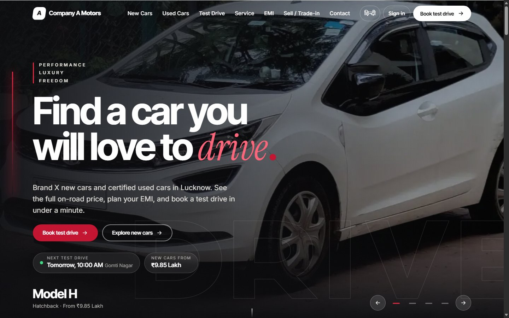
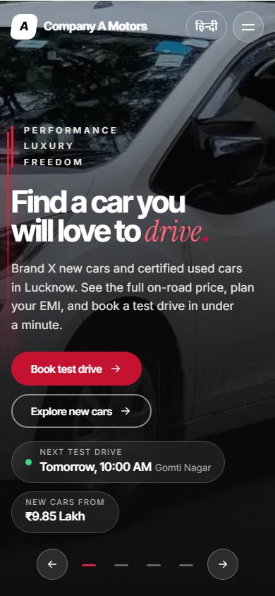
Figures 3–4. The "night garage" hero (desktop and phone): one headline, one accent, a live "next test drive" chip, a price-from chip and a primary action.
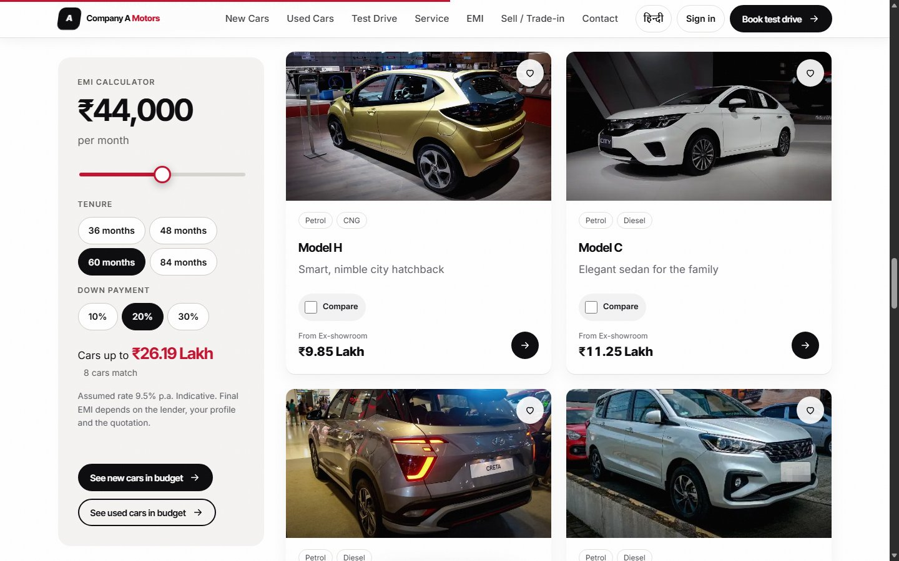
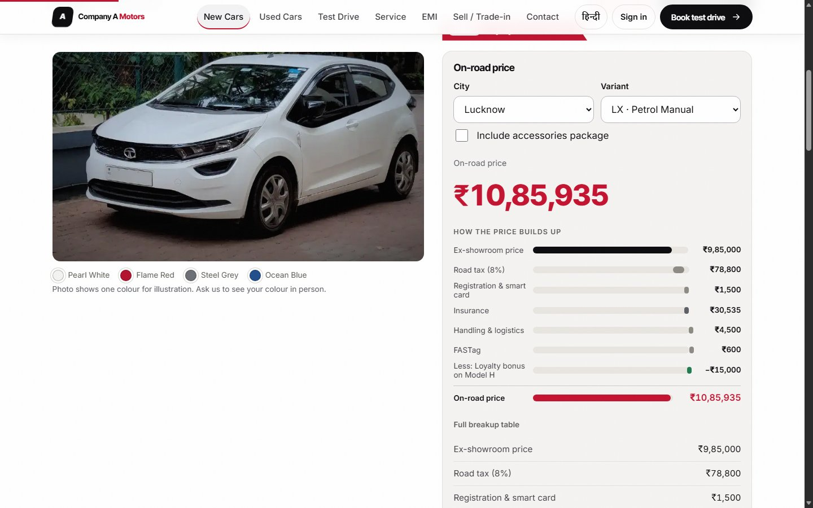
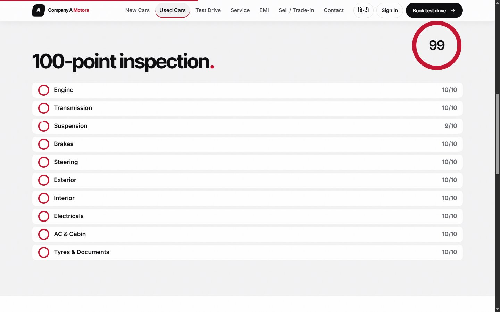
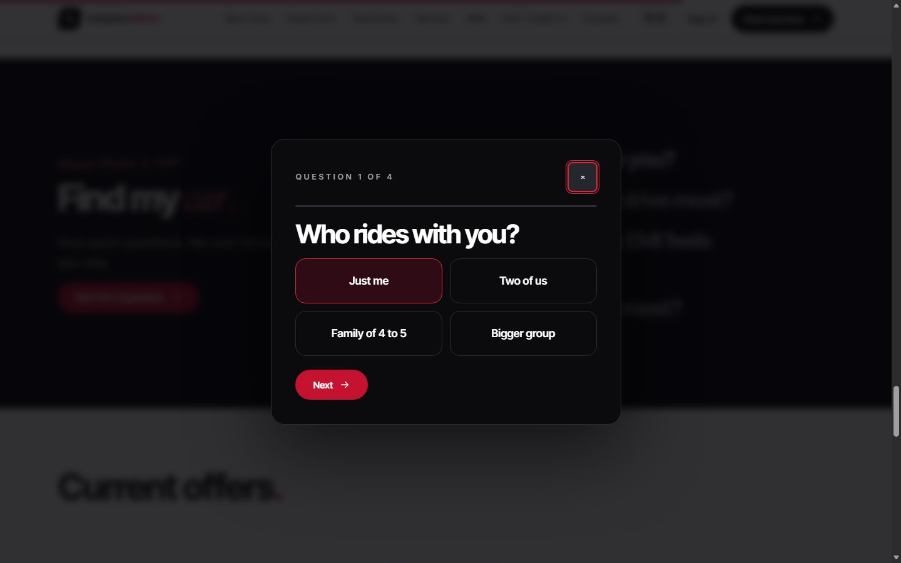
Figures 7–8. Used-car detail with the inspection report (registration masked); the four-question "Find my car" dialog.
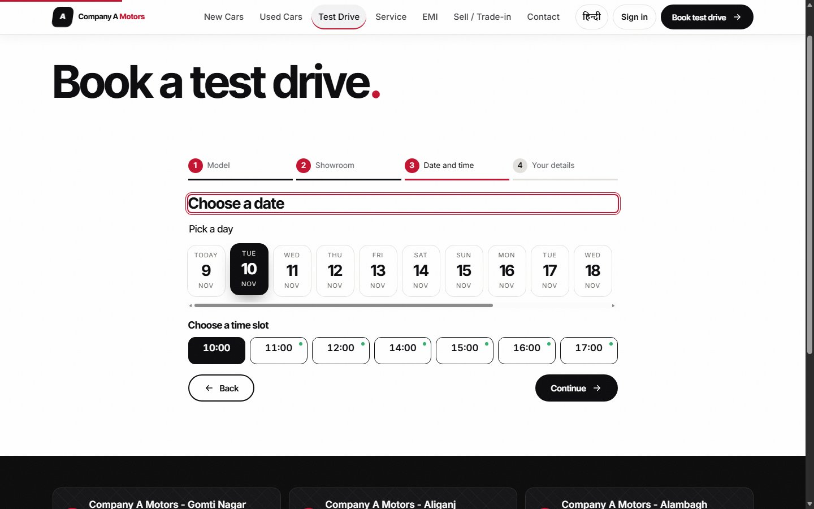
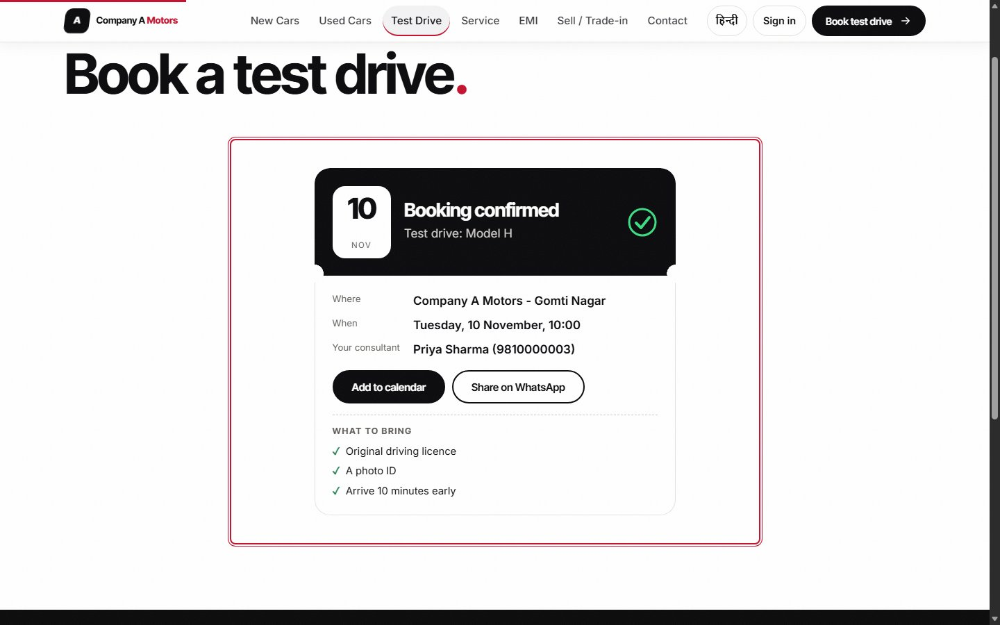
Figures 9–10. Real slots by showroom and demo car; the confirmation ticket with calendar and WhatsApp share.
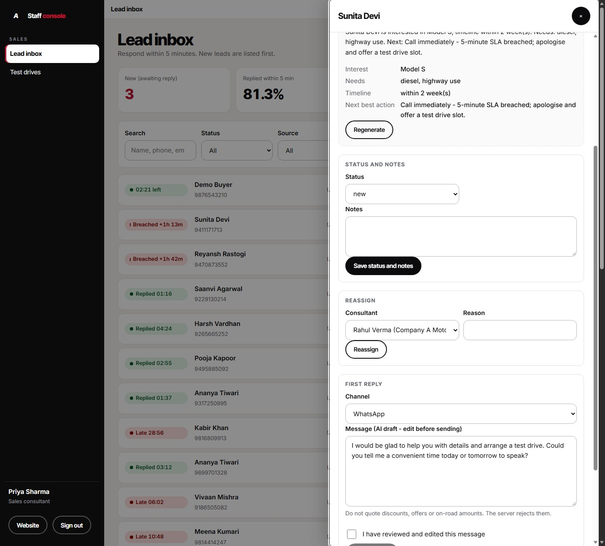
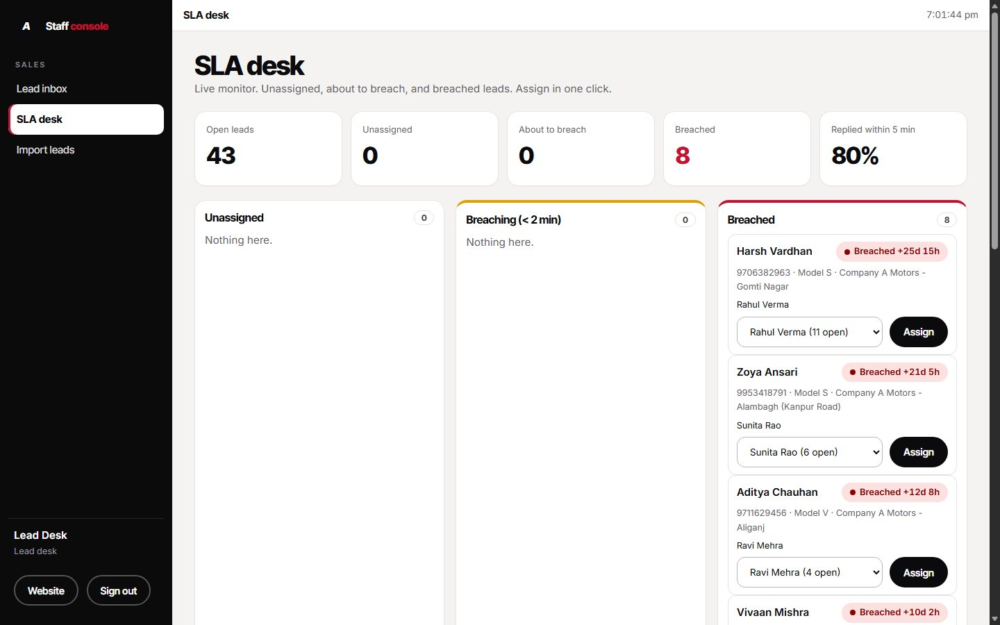
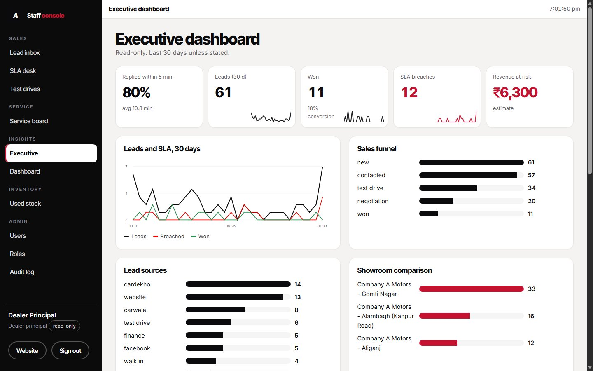
Figures 12–13. Lead-desk SLA monitor; read-only executive dashboard for the Dealer Principal (SLA %, funnel, revenue at risk).
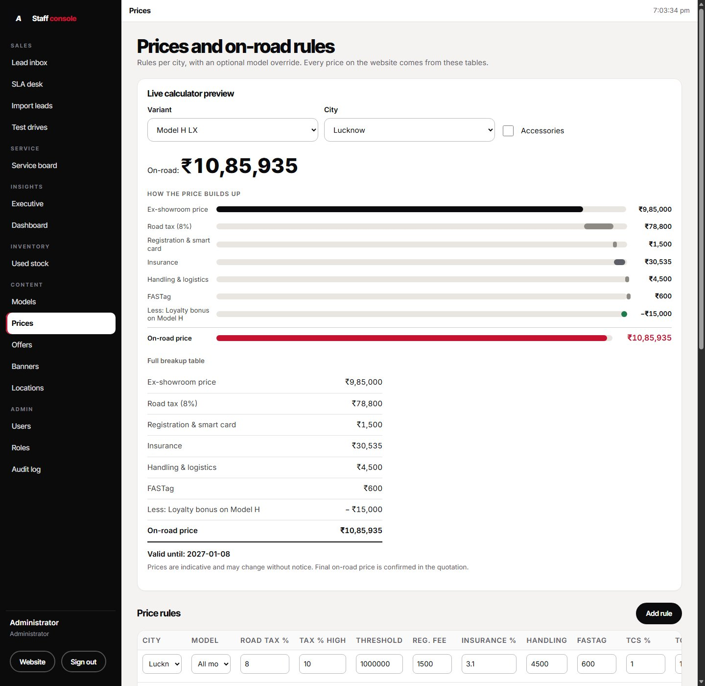
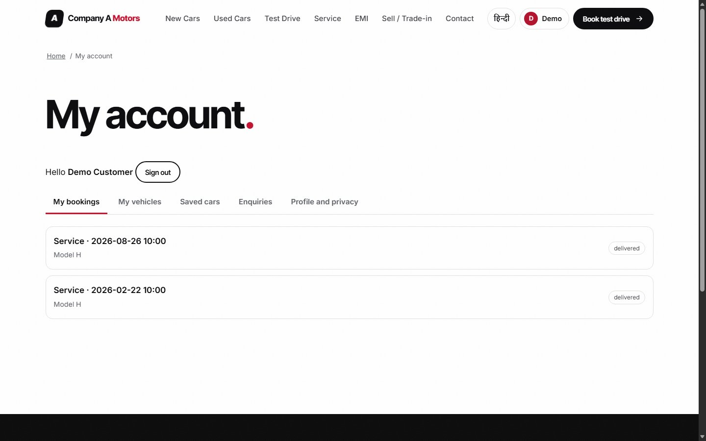
Figures 14–15. Admin price table with live calculator preview; the customer account (bookings, vehicles, saved cars, privacy actions) with the signed-in header chip.
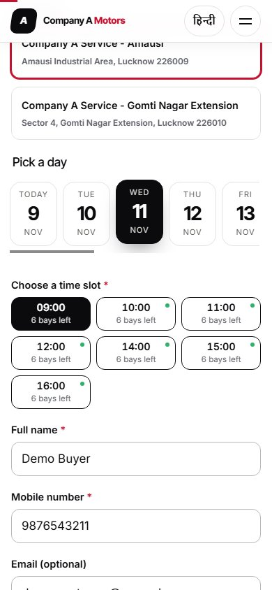
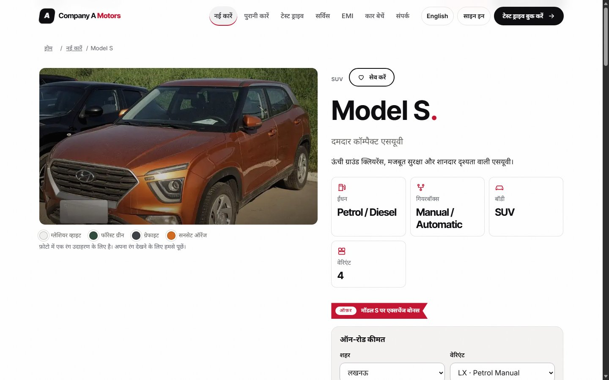
Figures 16–17. Service booking against bay capacity on a phone; the Hindi model page (signed-out header shows "साइन इन").
| What | Result |
|---|---|
npm test (node:test, temp databases) | 67 passing: on-road math, slots and double-booking, assignment, SLA, CSV import, RBAC matrix (every role × endpoint), sessions, customer OTP, price permission, production bootstrap, consent, discount filter, masking |
tests/e2e/run.js (HTTP) | 442 / 442 on a fresh database |
tests/e2e/rbac.js | 121 / 122 (the one miss is by design: the OTP lock-out check does not apply in mock mode) |
| Browser suites (headless Edge/Chrome) | 112 / 112 public and staff flows; 11 / 11 customer flow; header sign-in state across pages, languages and sign-out (7 / 7); no console errors, no horizontal scroll at 390 px, no touch targets under 44 px, contrast scan clean on the main pages |
QA rounds. Seven QA rounds, run by an automated QA agent rather than an independent human reviewer, were scored against a fixed rubric (functionality 30, backend and security 20, UX and design 20, SEO / performance / accessibility 10, language and DPDP 10, deployability and docs 10). Each defect was reproduced in the running app rather than found by reading code, and every report drove the next round of fixes. The scores are an internal quality metric, not an external grade:
| Round | 1 | 2 | 3 | 4 | 5 | 6 | 7 |
|---|---|---|---|---|---|---|---|
| Score /100 | 79 | 91 | 79 | 87 | 84 | 84 | 88 |
| Why | first build | fixes | role system and redesign added, new defects | fixes | big UI overhaul, perf regressed | perf, void bug | 0 major open |
Scores fell after the two large additions (role system, visual overhaul) because the new surface area brought new defects – the process worked as intended.
| Profile (warm runs, median) | Home, phone | Home, desktop | Model page, phone |
|---|---|---|---|
| Fast 4G (1.6 Mbps, 150 ms RTT) – primary metric | LCP 0.74 s · 278 KB | LCP 1.41 s · 398 KB | LCP 0.71 s · 152 KB |
| Fast 4G + 4× CPU slowdown (stress) | 1.33 s | 2.54 s | 2.98 s |
| Slow 4G | 2.12 s | 5.49 s (hero image) | not measured |
Layout shift is near zero everywhere (CLS ≤ 0.008). On the stress profile total blocking time stays high (home 0.5–1.3 s) because of two large full-page layout passes; CSS containment, content-visibility, a smaller DOM and font changes were tried without a reproducible gain, so the root cause is still open (see next steps). Measurements come from headless Chrome on a development PC, not from real devices or a live network.
| Cut or limitation | Detail |
|---|---|
| Real WhatsApp / SMS sending | A mock adapter stores and logs messages (as the brief allows). An HTTP gateway is wired by environment variables and DLT fields but has never been run against a real provider. In production, customer OTP login fails closed until one is configured. |
| Live deployment | Not deployed. The Dockerfile (non-root, health check, volume) is written and reviewed; the first container build and health check are the first deployment step. A1 |
| AI with a real model | Integrated with automatic fallback; needs an API key and a validation run (section 7). |
| Photography | Stock photos from Wikimedia Commons (CC licences, credited at /credits), graded and cropped. They show other manufacturers' badges and some show-floor clutter, which is the weakest part of the visual result (QA rating 7 / 10). The client must replace them with Brand X press images and the yard's own photos; upload is built. |
| History hygiene | The git history is kept as required. Earlier commits include stock-photo versions from before plates were masked and one image later removed because its photographer asks to be contacted before commercial use. No secrets or real personal data are in the repository (seed data is invented; .env and data/ are ignored). |
| Price values | Illustrative, not official road-tax or insurance rates; the admin edits them. |
| Security hardening | Rate limits and login lock-outs live in memory (reset on restart, per process). No CAPTCHA, no 2FA for staff, no automated backups. Fine for a single instance; not for a scaled-out fleet. |
| Admin ergonomics | Some JSON-shaped fields (colours, specs, inspection) are edited as JSON text. |
| Not built | 360° viewer, online payment (out of scope), DMS integration (a daily CSV export endpoint instead), spare-parts shop (out of scope), email notifications, CI pipeline. |
| Language review | Hindi strings were not reviewed by a native speaker; the privacy notice is not legal advice. |
The brief gives three sample rows, the numbers in the problem section and the constraints. Everything below is mine and is labelled where it appears above.
| ID | Assumption |
|---|---|
| A1 | Brand X has four models – H (hatchback), C (sedan), S (SUV), V (7-seat MPV) – with 2–4 variants each; names, specs, colours, offers, 21 used cars, 32 past sales and ~60 historic leads are invented. The brief supplies only NEW-H-02, UC-1182 and UC-1190. The project is not deployed publicly because the brief asks for a live link only "if you deployed it". |
| A2 | On-road prices are offered for six cities: Lucknow, Kanpur, Varanasi, Prayagraj, Gorakhpur and Delhi NCR; all are editable in the admin. |
| A3 | Road-tax %, registration fee, insurance %, handling, FASTag, the TCS rule (1% above ₹10 lakh) and all rule values are illustrative defaults, not official rates. |
| A4 | Showroom, workshop and yard names and addresses (Gomti Nagar, Aliganj, Alambagh; Amausi and Gomti Nagar Extension workshops; a yard on Faizabad Road), phone numbers and opening hours are invented. |
| A5 | Slots are one hour long within opening hours; a demo car can take one test drive per slot; each workshop has a fixed number of bays per slot (6 and 4). |
| A6 | The five-minute response SLA comes from the brief; the 15-minute SLA for service call-backs is my choice. |
| A7 | The brief names buyers/owners, sales consultants and the lead desk, service advisors and the Dealer Principal. I added showroom manager, workshop manager, used-car manager (the brief's "used-car manager"), content editor and admin, and gave buyers optional phone-OTP accounts. |
| A8 | Buyers can enquire and book without creating an account; the account is an optional extra. |
| A9 | The "Ai or automation" line in the out-of-scope list is read as the heading of the AI rules that follow it, not as an exclusion of AI. Automatic acknowledgements by WhatsApp or SMS template are implemented with a mock provider. |
| A10 | Consent wording, the privacy notice, the "captured by the portal" consent for CSV imports and the deletion flow are my drafts, not legal advice. |
| A11 | Hindi text is authored in-house and has not yet been reviewed by a native speaker. |
| A12 | Photos are stand-ins; the real dealer would supply brand imagery. |
| A13 | Messaging providers and OTP delivery are simulated by default. |
| A14 | Revenue-at-risk uses the brief's own formula (late leads × conversion gap × ₹25,000; unanswered call-backs × ½ × ₹4,500 × 30%); the conversion gap is measured from the data if available, else 10 percentage points. |
| A15 | The "daily CSV export" for the DMS is an admin endpoint (/api/admin/export/dms.csv) rather than a scheduled job. |
| A16 | The used-car price band is computed from the invented past sales table (same model, year ±1, similar kilometres). |
| A17 | EMI defaults (9.5% a year, 60 months, 20% down payment) are placeholders in the settings table. |
| A18 | The load estimates (4,500 leads and 3,000 service calls a month) come from the brief and are taken as the capacity target for a single SQLite instance. |
The project was built with AI-assisted development (Claude Code), organised as a small team of specialised roles under my direction – manager, researcher, backend developer, frontend developer and tester, plus helpers for photo sourcing and screenshots. A written engineering contract (docs/CONTRACT.md) fixed the stack, file ownership and API shapes; the work is recorded in a progress log (PROGRESS.md) and QA reports (docs/QA_REPORT.md). The git history (more than 40 commits) shows the build in order: setup and contract → backend → frontend → QA fixes → role system → photos → redesign → QA rounds. Suggested reading order: README.md, deployment.md, docs/CONTRACT.md, server/services/catalog.js (price engine), server/services/leads.js (assignment and SLA), server/services/sales.js (bookings), server/services/ai.js, server/lib/perms.js and tests/api.
Additional documents in the repository: docs/RESEARCH.md and docs/UX_RESEARCH_V2.md (research notes), docs/IMAGE_CREDITS.md and docs/FONT_LICENSES.md (licences), docs/BACKEND_NOTES.md and docs/FRONTEND_NOTES.md (developer notes).